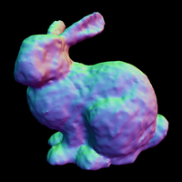

cuTile Python Interoperability#
Introduction#
Warp can export user-defined @wp.func functions as cuTile
foreign functions, so that kernels written in cuTile Python can call Warp SIMT code.
An exported function can use Warp’s geometry queries, volume sampling, noise,
and the rest of the builtin library, subject to the restrictions in
Supported Types and Limitations. The call contract is derived from the
function’s signature.
Typical uses are tile programs that need a per-element operation cuTile has no equivalent for: querying geometry (signed distances, ray casts, closest points) from inside a tile kernel, sampling volumes or procedural noise as network inputs, or generating training labels (e.g. signed distances to a mesh).
The entry point is warp.experimental.cutile.export_func(): it packages
a @wp.func once as a .tilelib (the foreign-function library format
that tileiras packs and links), and the returned object is called directly
inside @ct.kernel bodies. See the
API reference for the full
signatures.
Experimental
The cuTile interop API is experimental and subject to change without a formal deprecation cycle; it builds on cuTile preview interfaces that may change between CUDA Toolkit and cuTile Python releases. It is GPU-only.
Requirements#
On a machine with a supported GPU and driver, a complete setup is one command:
pip install "warp-lang[cutile]"
The cutile extra pulls in cuTile Python and tileiras alongside Warp’s
CUDA 13 wheel; nothing else has to be on
PATH. The remainder of this section explains each requirement and the
alternatives.
A CUDA device supported by cuTile Python (see the cuTile documentation for supported architectures).
The cuTile Python packages:
cuda-tile1.8.1 or later and its companioncuda-tile-preview, which provides thecuda.tile_preview.foreign_callpreview feature this path is built on.tileirasfrom CUDA Toolkit 13.5, the Tile IR assembler and linker that packs and links the.tilelibfiles Warp produces. Thecutileextra installs it in the Python environment through thenvidia-cuda-tileiraswheel and itsnvidia-cuda-nvcc,nvidia-nvvm,nvidia-nvjitlink, andnvidia-cuda-crtcompanions; otherwise put the 13.5 toolkit’sbindirectory first onPATH. It is needed at runtime, not only at install time, becauseexport_func()packages functions when it is called (see Compilation and Caching).
The feature is available on Linux (x86-64 and aarch64) and Windows (x86-64 and experimental Arm64), the platforms the cuTile packages ship wheels for, with Warp’s CUDA 13 wheel; it is not available on macOS. The driver only has to support the cuTile packages installed (see the cuTile documentation), not a particular toolkit version. No extra Warp build steps are needed; the feature is part of the standard Warp installation.
Quick Start#
The following example evaluates the signed distance to a
warp.Mesh inside a cuTile kernel—a BVH closest-point query that cuTile
cannot express natively—and checks the result against a plain wp.launch()
of the same function:
import cuda.tile as ct
import numpy as np
import warp as wp
import warp.experimental.cutile as wpct
TILE = 128 # tile length per call
@wp.func
def mesh_sdf(mesh_id: wp.handle, p: wp.vec3) -> float:
q = wp.mesh_query_point_sign_normal(mesh_id, p, 1.0e6)
cp = wp.mesh_eval_position(mesh_id, q.face, q.u, q.v)
return q.sign * wp.length(p - cp)
@wp.kernel
def sdf_reference(mesh_id: wp.handle, queries: wp.array[wp.vec3], out: wp.array[float]):
i = wp.tid()
out[i] = mesh_sdf(mesh_id, queries[i])
# package the Warp function as a cuTile foreign function (JIT compiled, cached)
wp_sdf = wpct.export_func(mesh_sdf)
@ct.kernel(num_worker_warps=TILE // 32)
def sdf_kernel(mesh_id: ct.Constant[int], points, out):
bid = ct.bid(0)
p = ct.reshape(ct.load(points, (bid, 0), shape=(TILE, 4)), (TILE * 4,)) # vec3 padded to 4
d = wp_sdf(mesh_id, p) # one query per tile element; mesh_id is shared by all of them
ct.store(out, (bid,), d)
# a random triangle-soup mesh, built by the Warp host runtime
rng = np.random.default_rng(42)
num_tris = 500
centers = rng.uniform(0.0, 1.0, (num_tris, 3)).astype(np.float32)
offsets = rng.uniform(-0.05, 0.05, (num_tris, 3, 3)).astype(np.float32)
tri_points = (centers[:, None, :] + offsets).reshape(-1, 3)
mesh = wp.Mesh(
points=wp.array(tri_points, dtype=wp.vec3),
indices=wp.array(np.arange(num_tris * 3, dtype=np.int32), dtype=int),
)
num_points = 1024 # must be a multiple of TILE
q_np = rng.uniform(0.0, 1.0, (num_points, 3)).astype(np.float32)
q_pad = np.zeros((num_points, 4), dtype=np.float32)
q_pad[:, :3] = q_np # pad xyz to the power-of-two width 4
points = wp.array(q_pad, dtype=wp.float32)
out = wp.zeros(num_points, dtype=wp.float32)
# ct.launch accepts an integer CUDA stream handle and Warp arrays directly
# (via __cuda_array_interface__). No synchronization is needed: the kernel
# runs on Warp's stream, so later Warp work is ordered after it, and the
# .numpy() reads below synchronize implicitly.
ct.launch(
wp.get_stream().cuda_stream,
(num_points // TILE, 1, 1),
sdf_kernel,
(mesh.id, points, out),
)
# compare with a plain Warp launch of the same function
reference = wp.zeros(num_points, dtype=wp.float32)
wp.launch(sdf_reference, dim=num_points, inputs=[mesh.id, wp.array(q_np, dtype=wp.vec3), reference])
print("max |cuTile - Warp|:", np.abs(out.numpy() - reference.numpy()).max())
Calling Convention#
A cuTile kernel is written in terms of whole tiles: there is no thread index,
and an operation like ct.load or ct.mma acts on a tile as one value,
with tileiras deciding how the kernel’s worker threads carry it out. A Warp
function is the opposite kind of code—SIMT, written for one thread operating on
one scalar, vector, or struct. The bridge connects the two by treating a tile as
a batch of per-thread work: calling the packaged function on tiles of N
elements runs the Warp function N times, once per element, each run on one
of the kernel’s worker threads with that element’s values as its arguments, and
the N results come back as one tile. From the kernel’s point of view it is
just another tile operation; from the Warp function’s point of view it is an
ordinary per-thread call.
Calling export_func on a function is its declaration: the call packages
the function and fixes everything the kernel side needs to know about it.
Inside a cuTile kernel, the packaged function is called with one argument per
Warp parameter and returns one tile. Three ideas cover the whole convention;
the snippets below use this function, with f the object
export_func returns and bid the block index:
@wp.func
def blend(x: float, v: wp.vec3, scale: float) -> float:
return (x + wp.length(v)) * scale
f = wpct.export_func(blend)
Tile length. The tile length, written TILE throughout this section, is
the number of elements in the tiles you pass to the call—and therefore the
number of times the Warp function runs. You do not fix it when you declare
the function: any power of two from 32 to 1024 works (see When to Set
num_worker_warps for the cases that pin or bound it). It is also independent of
the kernel’s num_worker_warps: cuTile schedules the invocations onto the
worker threads the kernel has, whether that is fewer or more than the tile
length.
x = ct.load(xs, (bid,), shape=(128,)) # a tile of 128 values ...
r = f(x, v, 2.5) # ... runs blend 128 times
# another call site may use another length, even in the same kernel
# (v and v32 are the matching (128 * 4,) and (32 * 4,) vector tiles)
r2 = f(ct.load(xs, (bid,), shape=(32,)), v32, 2.5)
Operands. Each argument is either per-invocation or shared, and
the call tells the two apart by what you pass. A per-invocation argument is a
rank-1 tile with one value per invocation: shape (TILE,) for a scalar, or
(TILE * width,) for a vector, matrix, quaternion, or transform, where
width is the component count rounded up to a power of two (wp.vec3
becomes 4). Every per-invocation argument in one call must describe the same
number of invocations, so their tiles share TILE; a mismatch is reported
when the kernel is traced. A shared argument is one value that every
invocation reads: a plain Python number or runtime kernel parameter for a
scalar (typically a ct.Constant kernel parameter or a literal, as with
mesh_id in the Quick Start), or one (width,) tile for a vector,
matrix, or struct. Arrays are always shared; structs and opaque ids usually
are. The table below gives the recipe for each parameter type.
x = ct.load(xs, (bid,), shape=(TILE,)) # scalar: (TILE,)
v = ct.reshape(ct.load(vs, (bid, 0), shape=(TILE, 4)), (TILE * 4,)) # vec3: (TILE * 4,), width 4
r = f(x, v, 2.5) # shared scale: one plain value
Arguments are passed positionally or by Warp parameter name. Call-site
mistakes—a wrong rank, tile length, or element type, or a value of the wrong
kind—are reported when cuTile traces the kernel, as a
StaticAssertionError that names the function and the parameter.
Return value. One tile: (TILE,) for a scalar, (TILE * width,) for a
vector or matrix with the same width rule, and for a struct an int32
tile of shape (TILE * width,) where width is the length of the array
encode_struct returns for
an instance; each invocation’s leading sizeof(struct) bytes are the
struct’s in-memory representation and the trailing lanes are zero.
r = f(x, v, scale=2.5) # float return: a (TILE,) tile (arguments may be named)
ct.store(out, (bid,), r)
n = g(x) # g returns wp.vec3: a (TILE * 4,) tile ...
ct.store(normals, (bid, 0), ct.reshape(n, (TILE, 4))) # ... viewed as (TILE, 4)
Operands by Parameter Type#
In the table’s snippets, wpct is the warp.experimental.cutile module and
f stands for a declaration whose single parameter has the row’s type.
Warp parameter type |
What to pass |
Example |
|---|---|---|
Scalar ( |
A |
x_t = ct.load(xs, (bid,), shape=(TILE,))
r = f(x_t)
|
Vector / matrix / quaternion / transform |
A flat |
v = ct.load(vs, (bid, 0), shape=(TILE, 4))
r = f(ct.reshape(v, (TILE * 4,)))
|
|
An |
# host
blob = wp.array(wpct.encode_struct(p), dtype=wp.int32)
# kernel: WORDS is len(blob), the int32 word count
r = f(ct.load(blob, (0,), shape=(WORDS,)))
|
|
A |
# host: unpack address + sizes
ct.launch(
..., (*wpct.array_pointer_args(arr), ...)
)
# kernel: ptr and length are ct.Constant[int] params
r = f((ptr, length))
|
Opaque ids ( |
The id as a plain value, shared |
# mesh.id passed in as a kernel constant
r = f(mesh_id)
|
All tiles are rank-1: multi-dimensional data is flattened at the call site with
ct.reshape, as in the vector recipe above, and host data for vectors and
matrices is stored padded to width. Opaque ids must come from objects the
Warp host runtime created (e.g. warp.Mesh). When loading 64-bit ids
or pointers from an array yourself, load them as int64 tiles—Tile IR has no
unsigned dtypes, and the bits pass through unchanged.
Ids and array addresses passed as plain values must be ct.Constant[int]
kernel parameters: cuTile’s runtime scalar parameters are 32-bit. A constant
specializes the kernel, so every distinct id or address compiles a separate
cuTile kernel variant (a fraction of a second each, cached by cuTile); reuse
arrays across launches where you can. Small shared scalars such as a count
or a weight may be ordinary runtime parameters.
Note
For vector, matrix, quaternion, and transform operands, get the
width factor right. A wp.vec3 operand for TILE = 128 must be a
(512,) tile (128 × 4). Pass a (128,) tile by mistake and it is read
as 32 invocations of 4 components each—128 = 32 × 4—so, unless a scalar
operand fixes TILE at 128, the call silently runs 32 times. Lengths that
are not a declared tile length times width fail loudly.
Arrays deserve a fuller example. A wp.array parameter is not copied into a
tile: the kernel hands the Warp function the array’s address and sizes as one
tuple, and the function accesses the array’s memory in place—reads, writes, and
atomics all work. Multidimensional arrays follow the same pattern with one more
size value per dimension (a wp.array2d parameter takes (ptr, rows, cols)).
On the host, warp.experimental.cutile.array_pointer_args() supplies the
address and size values:
@wp.func
def gather_scale(data: wp.array[float], i: int, scale: float) -> float:
return data[i] * scale
d_gather = wpct.export_func(gather_scale)
@ct.kernel(num_worker_warps=TILE // 32)
def k_gather(ptr: ct.Constant[int], length: ct.Constant[int], idxs, out):
i_t = ct.load(idxs, (0,), shape=(TILE,)) # per-thread index
r = d_gather((ptr, length), i_t, 2.5) # r[t] == data[idxs[t]] * 2.5
ct.store(out, (0,), r)
# host side: data, idxs, out are wp.array objects; unpack data into
# its address and length operands
ct.launch(
wp.get_stream().cuda_stream,
(1, 1, 1),
k_gather,
(*wpct.array_pointer_args(data), idxs, out),
)
When to Set num_worker_warps#
A declaration with the default scope="thread" is built for every
power-of-two tile length from 32 to 1024 at once, so call sites choose the
length through the tiles they pass, and num_worker_warps (default 4, the
same quantity as the calling kernel’s @ct.kernel(num_worker_warps=...))
can normally be left out. Three cases need it:
Case |
What |
|---|---|
A call passes only shared values, so no tile carries a length |
Sets how many invocations that call runs; it returns a
|
|
Pins the block size baked into the cooperative code; must equal the
calling kernel’s |
Iterator geometry queries in kernels with more than 8 worker warps (see Geometry Queries) |
Sizes the traversal stacks; must be at least the calling kernel’s
|
At block scope the declaration is built for that single length, and a kernel
whose num_worker_warps differs from the declaration’s fails to compile
(CompilerExecutionError from tileiras), so keep the two in sync.
# called with two plain numbers, no operand carries a length: the call runs 2 * 32 invocations
d_sum = wpct.export_func(add_scalars, num_worker_warps=2)
# block scope: num_worker_warps must equal the calling kernel's
d_block = wpct.export_func(block_sum, num_worker_warps=4, scope="block")
@ct.kernel(num_worker_warps=128 // 32)
def kernel(xs, out):
ct.store(out, (0,), d_block(ct.load(xs, (0,), shape=(128,))))
Block-Cooperative Functions#
By default (scope="thread"), each call performs one independent invocation
of the Warp function per tile element. cuTile may run several invocations on
one thread in turn or leave threads idle, so no two invocations are guaranteed
to execute together, and the function must not synchronize across threads.
Passing scope="block" instead runs a single cooperative invocation
per thread block (CTA) in which all worker threads participate. Operands are
distributed exactly as at thread scope—each participating thread receives its
own slice—but the threads may now cooperate, which allows Warp’s
block-cooperative tile builtins (wp.tile_load, wp.tile_sum, …) inside
the function. The shared memory those builtins need is allocated by
tileiras automatically, and functions that require it are rejected at
scope="thread" with an error message pointing to scope="block".
Warp tiles and cuTile tiles are distinct: a cuTile tile never crosses the
boundary as an object. A Warp function builds its own tiles, most directly by
loading them cooperatively from a wp.array:
@wp.func
def array_block_sum(data: wp.array[float], start: int) -> float:
t = wp.tile_load(data, shape=TILE, offset=start) # cooperative load
s = wp.tile_sum(t) # block-wide reduction
return s[0]
d_sum = wpct.export_func(
array_block_sum, num_worker_warps=TILE // 32, scope="block"
)
@ct.kernel(num_worker_warps=TILE // 32)
def kernel(ptr: ct.Constant[int], length: ct.Constant[int], start: ct.Constant[int], out):
r = d_sum((ptr, length), start) # every element of r holds the sum
ct.store(out, (0,), r)
The return value is still a tile of shape (TILE,): each participating
thread writes its own copy of the return value—here the block-wide sum, so every
element holds the same value.
Per-thread operand values can also feed cooperative operations: inside a
block-scope function, wp.tile(x) gathers each participating thread’s x
into one Warp tile, which is how data passed as ordinary per-thread tile
operands enters a block-wide computation.
Geometry Queries#
Warp’s mesh, BVH, hash-grid, and volume queries work inside foreign functions
without any special handling at the call site—the Quick Start’s
wp.mesh_query_point_sign_normal is one. Two kinds need a little more.
Iterator queries (wp.mesh_query_aabb, wp.mesh_query_sphere,
wp.bvh_query_*) keep per-thread traversal stacks in shared memory, sized
for a block of 8 worker warps by default. A kernel with more worker warps
needs the function declared with at least its num_worker_warps:
@wp.func
def aabb_count(mesh: wp.handle, x: wp.vec3) -> float:
h = wp.vec3(0.05, 0.05, 0.05)
q = wp.mesh_query_aabb(mesh, x - h, x + h)
n = float(0.0)
face = int(0)
while wp.mesh_query_aabb_next(q, face):
n += 1.0
return n
d_count = wpct.export_func(aabb_count) # kernels of up to 8 warps
d_count_16 = wpct.export_func(aabb_count, num_worker_warps=16) # 16-warp kernels
@ct.kernel(num_worker_warps=16)
def kernel(mesh_id: ct.Constant[int], pts, out):
p = ct.reshape(ct.load(pts, (0, 0), shape=(512, 4)), (512 * 4,))
ct.store(out, (0,), d_count_16(mesh_id, p))
num_worker_warps is a lower bound on the kernel’s compiled block, which
can be larger; a block that exceeds the declared capacity traps. This is a
known limitation of thread-scope iterator queries. A trap is a sticky device
fault: the launch fails with a CUDA error (typically an illegal instruction
was encountered), the CUDA context is unusable afterwards, and the process
has to be restarted, so treat it as a programming error to fix, not a
condition to catch; the fix is to declare a larger num_worker_warps. The
cost is 128 bytes per thread per query family (mesh or BVH), so a 32-warp
block needs 128 KiB per family; a declaration whose scratch would exceed the
GPU’s per-block shared memory is rejected when the function is declared. Mesh
and BVH queries use separate stacks, so nesting one inside the other is safe.
At scope="block" the stacks are sized to the pinned block exactly.
Block-cooperative tiled queries (wp.tile_mesh_query_*,
wp.tile_bvh_query_*) traverse with the whole block and keep block-sized
result buffers in static shared memory, so they are accepted only at
scope="block"; that memory is in addition to what cuTile plans for the
kernel.
Supported Types and Limitations#
Supported parameter types are scalars, vectors, matrices, quaternions,
transforms, structs, and contiguous wp.array values, with float16,
bfloat16, and bool excepted; the return value is exactly one scalar,
vector, matrix, quaternion, transform, or struct. Within those types the
function body may call any Warp builtin, with two qualifications: the
block-cooperative tile builtins need scope="block" (see Block-Cooperative
Functions), and the MathDx-accelerated tile builtins (wp.tile_matmul,
wp.tile_fft, wp.tile_cholesky, …) compile to Warp’s portable
implementations rather than the MathDx device libraries.
Not currently supported:
Tile-typed parameters (only cuTile’s own tiles cross the boundary, carrying the scalar/vector/struct/array operands above).
Stateful query objects across calls (e.g.
wp.mesh_query_aabbiterators): the whole query loop must live inside a single@wp.funccall.Functions with more than one overload, including generic (
Any-typed) parameters: the declaration needs a single concrete signature.Default parameter values: a function with defaults is rejected at declaration; every parameter is passed at the call site.
Non-contiguous or indexed arrays; arrays as return values.
float16,bfloat16, andboolelement types, as scalars or inside vectors and matrices.Anything other than exactly one return value: a function that returns nothing is rejected at declaration time (see the note below for side-effect-only functions), and multiple return values are not supported.
Automatic differentiation: the exported function is forward-only, and cuTile has no autodiff to drive adjoints. Explicit
wp.grad()calls inside the function do work, since they are part of its forward computation.API capture (APIC) save/load:
ct.launch()is not a Warp API call, so a cuTile kernel that calls Warp functions is not recorded into a.wrpcapture and a saved/loaded replay omits it silently.Wide shared operands: sharing a value costs nothing for operands of up to 64
int32words (mat44, 6x6 matrices, structs of up to 16vec4fields). Wider shared operands can run several times slower at small tile lengths; keep shared structs small, or pass large data as an array.Recoverable reporting of an oversized block: a kernel whose block is larger than a thread-scope declaration’s iterator-query stacks support stops with a device trap rather than a Python error (see Geometry Queries).
Note
Compilation through tileiras never removes a foreign call, even one whose
result is not used, because it assumes the call may read or write memory.
A function called only for its side effects (for example, wp.atomic_add()
into a wp.array) therefore runs even if its returned tile is dropped.
The bridge still requires a return value, so give such a function a dummy
scalar return.
Compilation and Caching#
export_func compiles and packages the function when it is called
(at declaration, not when the kernel is traced or launched), on the machine it
runs on—the same just-in-time model as Warp kernels. Expect roughly a second of
one-time cost per function the first time; results are cached on disk in the
Warp kernel cache, so later declarations of the same function—including in new
processes—are effectively free. A thread-scope build covers all supported
tile lengths at once; the two scopes, distinct num_worker_warps values
for block-scope functions and for query functions sized above 8 warps, and
each target architecture are separate builds.
The function is compiled with its own Warp module’s build options—mode,
optimization_level, fast_math, lineinfo, and the
extra_build_options preamble, include directories, and build dependencies (set with
warp.set_module_options())—and the global warp.config.verify_fp, so it
computes what the same @wp.func computes under warp.launch(), including
through wp.func_native dependencies that rely on the preamble. Geometry
queries and tile builtins are recognized only in Warp code and in
wp.func_native snippet text. A call inside a header that a snippet
includes is not seen, and the shared memory it needs is not reserved, so keep
such calls in the Warp function or in the snippet itself. The
declaration targets the architecture of device, which defaults to the
current Warp device (warp.get_device()). Two options do not carry over
fully. fuse_fp=False is forwarded but not guaranteed, with a warning:
floating-point contraction is decided when tileiras link-time-optimizes the
calling kernel, outside Warp’s control. Exported functions do not honor
deterministic mode (deterministic).
The generated CUDA C++ for each function is kept beside its compiled code in
the cutile/ directory of the kernel cache, like the sources Warp keeps for
its kernel modules, for inspection.
The cache is keyed on content: changing the function, its Warp version, its
module build options, or the toolchain automatically triggers recompilation, so
stale artifacts are never reused and no manual invalidation is needed. Two
caveats: if you edit Warp’s native headers or replace the tileiras
toolchain while a process is running, restart it before declaring functions
again; and moving a function’s source file to another path causes a rebuild.
wp.clear_kernel_cache()
removes the cached artifacts along with Warp’s other kernel-cache contents;
a previously packaged function then reports its missing .tilelib when a
new kernel traces it, and must be declared again.
CUDA Graph Capture#
A ct.launch() on Warp’s stream is recorded by warp.capture_begin() /
warp.capture_end() (or warp.ScopedCapture) like any other
stream-ordered work, and the graph replays with warp.capture_launch().
The kernel may be compiled during capture; no warm-up launch is needed.
Keep the @ct.kernel object alive for as long as the graph is replayed. The
graph refers to the kernel’s device code but does not keep the kernel object
alive; once that object is garbage collected, replaying the graph crashes the
process with a segmentation fault rather than a Python exception. A helper
that defines the kernel locally must therefore return the kernel along with
the graph (the foreign function object itself does not need to outlive the
graph):
wp_scale_add = wpct.export_func(scale_add) # scale_add: a @wp.func of two floats
def build_graph(xs, ys, out):
@ct.kernel(num_worker_warps=TILE // 32)
def kernel(xs, ys, out):
x = ct.load(xs, (0,), shape=(TILE,))
y = ct.load(ys, (0,), shape=(TILE,))
ct.store(out, (0,), wp_scale_add(x, y))
with wp.ScopedCapture() as capture:
ct.launch(wp.get_stream().cuda_stream, (1, 1, 1), kernel, (xs, ys, out))
return capture.graph, kernel # the kernel must outlive the graph
graph, kernel = build_graph(xs, ys, out)
wp.capture_launch(graph)
Troubleshooting#
ImportError: cuTile Python is required for warp.experimental.cutile(orthe installed cuda-tile-preview lacks the Tilelib/foreign_call API)—the cuTile packages are missing or older than 1.8.1:pip install -U "warp-lang[cutile]".StaticAssertionError: ... <function>(): parameter '<name>' ...while cuTile traces the kernel—the bridge checked the call site: the message names the parameter and says what it expected (a rank-1 tile, a tile length among the declared ones, a matching element type, a plain number or(width,)tile for a shared value, or anarray_pointer_args()tuple for an array).Wrong values in vector lanes—the input tile was not padded: a
wp.vec3consumes 4 elements per invocation, with the fourth ignored. Store host vectors padded towidthand load them as(TILE, width)before flattening withct.reshape(see the note under Operands by Parameter Type).uses a block-cooperative tiled query builtin ... call export_func with scope="block"(likewiserequires N bytes of block-shared memory)—the function uses Warp tile builtins or tiled queries, which need the whole block; declare it withscope="block"(see Block-Cooperative Functions).RuntimeError: Device functions can only be called from device code.—the packaged function was called from host Python; it can only be called inside a@ct.kernelbody.an illegal instruction was encountered(or another sticky CUDA error) right after a kernel that calls a foreign function—the wrapper trapped: the kernel’s compiled block is larger than the declaration’snum_worker_warpssupports for iterator geometry queries (the compiler may add warps beyond the kernel’snum_worker_warps). Declare a largernum_worker_warpsand restart the process.CompilerExecutionErrorfromtileiraswhile the kernel compiles (expected tensor_view rank and tile rank to matchor similar)—the bridge checks operand shapes at trace time, so look at the kernel’s own tile operations around the call: a vector or matrix result is a flat(TILE * width,)tile and must be reshaped (ct.reshape(n, (TILE, 4))) before a 2-Dct.store.CompilerExecutionErrorreporting onlyfailed to compile Tile IR programfor a kernel that calls ascope="block"function—the kernel’snum_worker_warpsdiffers from the declaration’s.tileirasrejects the mismatch when it compiles the kernel but prints no reason; fix one of the two values.needs N bytes of compiler scratch ... allows at most M bytes—the traversal-stack scratch for the declarednum_worker_warpsexceeds the GPU’s per-block shared memory; declare fewer warps or split the mesh and BVH queries across functions (see Geometry Queries).'tileiras' not found—install thewarp-lang[cutile]pip extra, or add the CUDA Toolkit 13.5bindirectory toPATH.... is the CUDA Toolkit 13.4 tileiras; the cuTile bridge requires the 13.5 tileiras—another toolkit’stileiraswas found first; installwarp-lang[cutile]or put the 13.5 toolkit’sbindirectory ahead of other CUDA installs onPATH.foreign_call requires tileiras 13.5 or later. Current version is <older>although a 13.5 toolchain is installed—cuTile probestileirasand the probe failed, usually becausetileirasfound an olderptxasonPATH(Unsupported .versionin the underlying error). Put the 13.5 toolkit’sbindirectory ahead of other CUDA installs onPATH.
Example#
A complete runnable example lives in warp/examples/interop/:

example_cutile_neural_sdf.py: trains a DeepSDF-style neural signed-distance field of the Stanford bunny with a fused Warp + cuTile kernel. A single launch per training iteration produces the ground-truth labels (Warp’s signed mesh query), the MLP forward pass (cuTile tensor-core matmuls), the hidden activations, and the loss; further cuTile kernels back-propagate through the stored activations and Warp’s Adam optimizer updates the weights, so training never leaves the GPU.
It needs the cutile and examples extras (the latter for the USD bunny
asset and the rendered output):
pip install "warp-lang[cutile,examples]"
python -m warp.examples.interop.example_cutile_neural_sdf